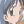

Genshiken
II épisode 01 Les projets du
nouveau président
Genshiken
II épisode 01 Les projets du
nouveau président
Genshiken
II épisode 02 Les rencontres sont désastreuses
Genshiken
II épisode 03 Une chaude journée d'été
 Hitohira
épisode 01 Je ne peux pas le
faire...
Hitohira
épisode 01 Je ne peux pas le
faire...
Hitohira
épisode 02 Une... imitation !?
 Kimikiss
pure rouge épisode 01 Les
Retrouvailles
Kimikiss
pure rouge épisode 01 Les
Retrouvailles
Kimikiss
pure rouge épisode 02 Une
beauté fraîche
Kimikiss
pure rouge épisode 03 Marque-page
Kimikiss
pure rouge épisode 04 Intervention
Kimikiss
pure rouge épisode 05 Bondir
Kimikiss
pure rouge épisode 06 Chaque mélodie
 Kodomo
no Jikan OAV Ce que tu m'as offert
Kodomo
no Jikan OAV Ce que tu m'as offert
Kodomo
no Jikan épisode 01 Le premier
pas pour être amis
Kodomo
no Jikan épisode 02 Une
récompense pour le sourire
Kodomo
no Jikan épisode 03 Grandir
vite
Kodomo
no Jikan épisode 04 Ma maman
Kodomo
no Jikan épisode 05 Un ami de
vacances
Kodomo
no Jikan épisode 06 Souvenirs
Kodomo
no Jikan épisode 07 Classe verte
Kodomo
no Jikan saison II Preview
 Kujibiki
Unbalance II épisode 01
Kujibiki
Unbalance II épisode 01
Kujibiki
Unbalance II épisode 02
 Mermaid Melody Pichi Pichi Pitch 01
Mermaid Melody Pichi Pichi Pitch 01
 Sketchbook ~full color's~ 01
Sketchbook ~full color's~ 02
 ToraDora! 01 Tigre et dragon
ToraDora! 01 Tigre et dragon
ToraDora! 02 Ryuuji et Taiga
ToraDora! 03 Ta Chanson
ToraDora! 03 L'expression de cet instant